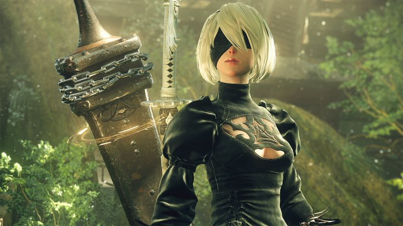
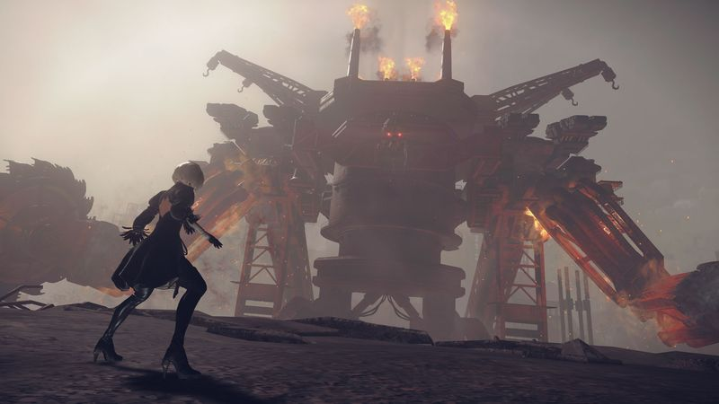

The thirty-second version
Finish it five times. Yes, really.
First game that made me cry. And I have watched every Pixar movie in a hospital.
NieR: Automata is a game we still bring up at unrelated dinner parties. The combat is Platinum-slick, the story is a series of small gut punches, and there is no way around telling you the truth: you have to play it more than once for it to land. If that sounds like homework, this isn't the one. If it sounds like an offer, get in.
Okay, what is this thing?
You're a battle android in a skirt and a blindfold, fighting a giant machine that is somehow riding a rollercoaster. Nine hours later that same game is a top-down bullet hell, then a text adventure, then a boss fight that reads like a philosophy lecture with a health bar. Yoko Taro is doing something. We're not always sure what. We are always in.
The Platinum combat holds it together: light attack, heavy attack, dodge, a hovering pod that lays down suppressive fire. Under that sits the chip system, where every ability is a physical circuit board you slot into a limited grid, HUD elements included. Skip the map on purpose, unslot it, that's on you. It's the only game we know where the pause menu is part of the story.


Why it escaped the group chat
- The full arc requires multiple playthroughs, each of which reframes the earlier ones. This is on purpose, not padding.
- The score is by Keiichi Okabe and it is enormous. It has ended more than one of our long car rides in a good way.
- Combat is Platinum-developed, so it feels closer to Bayonetta than to a traditional JRPG.
Three dads enter
01
Dad Who Skipped the Tutorial
The 'do the same game again' pitch didn't land at first.
I finished the first playthrough, got told the game hadn't really started yet, and made the face we all make about paperwork. I picked it up again a month later, hit route C, and admitted it was good, actually. I still can't tell you what the plot is. Neither can the other two, if we're honest.
02
The Descent Guy
Fusing chips to slot a bigger HP bar is a real move.
I treated the chip grid like a loadout puzzle and had a two-tab spreadsheet inside a week. Fuse chips to save slots, delete the HP bar to gain damage: this is my exact vocabulary now. I argue the top-down shooter sections are the sharpest part of the game, and one of the other two is starting to suspect I might be right.
03
Normal-ish Dad
The story earns every one of its five endings.
I went in expecting a hack-and-slash and came out staring at the wall. Sessions run long because you can't stop at a chapter break, and the fishing is a genuine trap for an evening. I recommend it to the exact friends who ask, and to nobody else. Which is, I think, the correct posture on this game.
Who it is for and what to watch
Invite these people
- People who don't mind games with homework if the homework is good
- Anyone who liked Bayonetta but wanted it to make them sad
- Group chats that can handle 'let me explain ending E' at 11pm
Dad caveats
- The PC version is famously fussy at launch and you'll want the community fixes
- Route A ends before the game really starts, which is a divisive design call
- There is fishing. You will lose an evening to it.
Receipts
Two of us reached ending E on PC across around forty hours each; the third stopped after Route A and needs to be gently coaxed back.